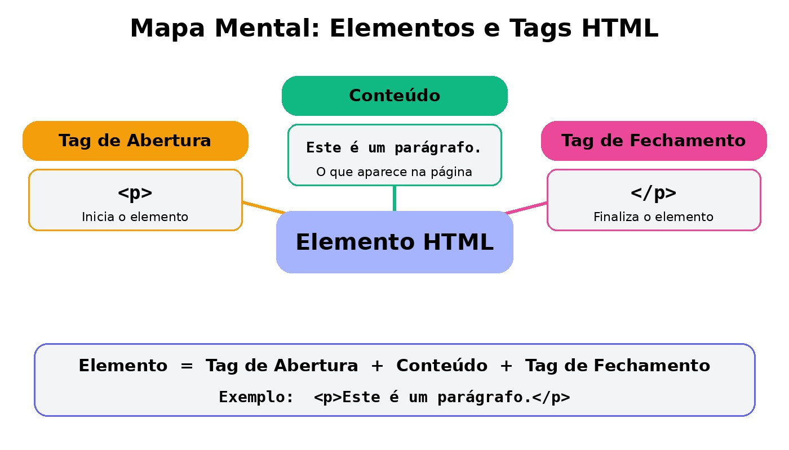

Elementos e Tags HTML
Agora que você já conhece a estrutura básica de uma página, é hora de entender os tijolos que constroem qualquer site: os elementos e as tags HTML. agora você vai aprender como o código é montado na prática, a diferença entre elementos e tags, e os principais tipos de conteúdo que podemos criar.
O que é uma Tag e o que é um Elemento?
Tag: É o comando entre os sinais de menor e maior (<e>). Ela diz ao navegador onde começa e onde termina um bloco de informação.
Anatomia de um Elemento HTML

Tag de Abertura (<p>): Marca o início do elemento. Conteúdo: O texto, imagem ou outro elemento que fica dentro dele. Tag de Fechamento (</p>): Marca o fim do elemento (note a barra /).
Tipos de Tags
-
Tags Duplas(Com Fechamento)
Precisam ser fechadas porque envolvem algum conteúdo, por exemplo: title, h1 e p.
-
Tags Auto-fecháveis
Essas tags não precisam de fechamento, pois representam elementos que não envolvem conteúdo, como: img, br, hr.
Tags Principais para Conteúdo
Veja como usar as tags mais comuns no dia a dia do desenvolvimento:

Clique aqui para ver mais informações
Valide seu código: Utilize validadores online (como o W3C Validator) para encontrar erros de sintaxe e garantir que seu HTML está correto.
Dicionário Rápido de Tags
| Tag | Nome | Função |
|---|---|---|
<h1> a <h6> |
Headings | Títulos e subtítulos (do mais importante <h1> ao menos importante <h6>) |
<p> |
Parágrafo | Blocos de texto comum |
<strong> |
Destaque | Deixa o texto em negrito (indica importância forte) |
<em> |
Ênfase | Deixa o texto em itálico (indica ênfase no trecho) |
<a> |
Âncora | Cria links para outras páginas ou sites |
<br> |
Quebra de Linha | Pula para a próxima linha no meio de um texto |
<hr> |
Regra Horizontal | Cria uma linha horizontal para separar conteúdos |